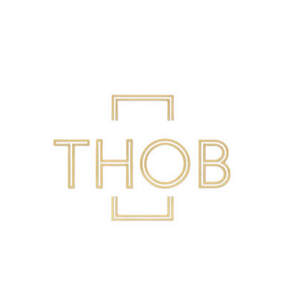

Trade Mark Journal No.2025/048 28 November 2025
UK00004282710 23 October 2025 (3,5,16,18,20,21,24,35,40,44)

- Class 3
- Skin care cosmetics; Exfoliants for the care of the skin; Essences for skin care; Skin care mousse; Skin care preparations; Skin care oils [cosmetic]; Skin care lotions [cosmetic]; Skin care creams [cosmetic]; Cosmetic creams for skin care; Cleansing milks for skin care; Milky lotions for skin care; Skin care creams, other than for medical use; Skin care oils [non-medicated]; Cosmetic preparations for skin care; Skin care (Cosmetic preparations for -); Skin care products for animals; Hand masks for skin care; Foot masks for skin care; Skin, eye and nail care preparations; Non-medicated skin care preparations; Perfumed oils for skin care; Wrinkle removing skin care preparations; Hair care creams; Horse oil cream for skin care; Body care cosmetics; Hair care lotions; Hair care serums; Hair care serum; Cosmetics for use in the treatment of wrinkled skin; Hair care creams [for cosmetic use]; Hair care lotions [for cosmetic use]; Beauty creams for body care; Lotions for face and body care; Hair care masks; Cosmetic products in the form of aerosols for skin care; Cosmetics for the treatment of dry skin; Sun care lotions [for cosmetic use]; Sun care lotions; Skin moisturizers; Skin moisturizer; Soaps for body care; Hair care agents; Cosmetics for protecting the skin from sunburn; Hair care preparations; Cosmetic hair care preparations; Facial care preparations; Cosmetic preparations for body care; Skin lotions; Lotions for the skin; Skin emollients; Deodorants for body care; Skin lotion; Skin moisturisers; Skin make-up; Skin moisturiser; Preparations for the care of the body; Skin cleansers; Beauty care cosmetics; Eye care products, non-medicated; Skin hydrators; Skin moisturizers used as cosmetics; Skin creams; Creams for the skin; Oil baths for hair care; Body cleaning and beauty care preparations; Skin cleansers [cosmetic]; Skin lighteners; Moisturizing preparations for the skin; Cosmetic nail care preparations; Skin cleansing lotion; Moisturising skin lotions [cosmetic]; Beauty care preparations; Cosmetic creams for the skin; Skin creams [cosmetic]; Skin creams [for cosmetic use]; Non-medicated body care preparations; Skin relief serum [cosmetic]; Skin moisturizer masks; Skin balms [cosmetic]; Cosmetic creams for dry skin; Colour cosmetics for the skin; Oils for the skin; Non-medicated skin serums; Sun care preparations for cosmetic use; Skin conditioners; Skin cream; Moisturising skin creams [cosmetic]; Makeup; Make-up; Facial makeup; Lip makeup; Nail makeup; Eye makeup; Theatrical makeup; Natural makeup; Make-up remover; Make-up primer; Organic makeup; Make-up removers; Make-up primers; Eye makeup remover; Powder for make-up; Make-up powder; Powder (Make-up -); Multifunctional makeup; Foundation make-up; Make-up foundation; Make-up pencils; Make-up for the face; Make-up for compacts; Eye make-up; Make-up foundations; Make-up palettes containing cosmetics; Chalk for make-up; Make-up removing lotions; Eye make-up removers; Eyes make-up; Make-up kits; Make-up base; Make-up preparations; Make-up removing creams; Eyelid doubling makeup; Makeup setting sprays; Make-up removing gels; Hair cosmetics; Make-up for the face and body; Facial concealer; Hair mascara; Make-up preparations for the face and body; Skincare cosmetics; Make-up removing preparations; Hairstyling serums; Facial creams [cosmetics]; Facial gels [cosmetics]; Make-up removing milks; Make-up removing milk; Hairstyling masks; Skin masks [cosmetics]; Eyeliner; Cosmetics for the use on the hair; Cosmetics; Body and facial creams [cosmetics]; Lip cosmetics; Compacts containing make-up; Cosmetic hair lotions; Body and facial gels [cosmetics]; Mascara; Eye-shadow; Fake blood being theatrical make-up; Eyeshadow; Lip stains [cosmetics]; Cosmetics for eye-lashes; Nail primer [cosmetics]; Eyebrow cosmetics; Moisturisers [cosmetics]; Facial moisturisers [cosmetic]; Facial cleansers [cosmetic]; Hair styling lotions; Facial beauty masks; Cosmetic facial lotions; Facial lotions [cosmetic]; Nail cosmetics; Nail paint [cosmetics]; Lipstick; Cosmetic facial masks; Facial masks [cosmetic]; Hair moisturizers; Cosmetic hair dressing preparations; Anti-aging moisturizers used as cosmetics; Eye cosmetics; Self-tanning preparations [cosmetics]; Eyeshadow palettes; Body creams [cosmetics]; Nail polish removers [cosmetics]; Facial creams [cosmetic]; Facial creams [for cosmetic use]; Colour cosmetics; Tanning gels [cosmetics]; Cosmetics for use on the skin; Facial wipes impregnated with cosmetics; Skin fresheners [cosmetics]; Beauty preparations for the hair; Night creams [cosmetics]; Nail varnish remover [cosmetics]; Skin recovery creams [cosmetics].
- Class 5
- Medicinal creams for skin care; Skin care lotions [medicated]; Skin care creams for medical use; Skin care oils [medicated]; Medicated skin care preparations; Skin care preparations for medical use.
- Class 16
- Make-up pads of paper for removing make-up; Tissues of paper for removing make-up.
- Class 18
- Makeup bags; Make-up bags; Make-up boxes; Make-up cases.
- Class 20
- Make-up mirrors for purses; Make-up mirrors for the home; Make-up mirrors for travel use.
- Class 21
- Skin care cream dispensers; Make-up brushes; Make-up sponges; Facial sponges for applying make-up; Eye make-up applicators; Makeup sponge holders; Make-up artist belts; Applicator sticks for applying makeup; Applicators for applying eye make-up; Cosmetics brushes; Make-up removing appliances; Eyeliner brushes; Applicator sticks for applying make-up; Mascara brushes; Cosmetic brushes; Appliances for removing make-up, non-electric; Non-electric make-up removing appliances; Hair for brushes; Hair brushes; Skin cleansing brushes; Applicators for cosmetics.
- Class 24
- Make-up pads of textile for removing make-up; Make-up removal wipes [textile] other than impregnated with cosmetics; Cloths for removing make-up; Textile napkins for removing makeup; Make-up pads of textile; Make-up removal towels [textile] other than impregnated with cosmetics; Make-up removal cloths [textile], other than impregnated with cosmetics; Cloth napkins for removing makeup.
- Class 35
- Marketing research in the fields of cosmetics, perfumery and beauty products.
- Class 40
- Custom manufacturing of make-up.
- Class 44
- Services for the care of the skin; Skin care salons; Skin care salon services; Health care; Services for the care of the scalp; Services for the care of the hair; Hair care services; Beauty care; Cosmetic body care services; Hygienic and beauty care; Services for the care of the face; Beauty care of feet; Cosmetic skin tanning services for human beings; Cosmetic make-up services; Make-up services; Services of a make-up artist; Permanent makeup services; Make-up application services.
THOB LTD